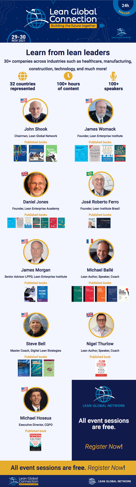
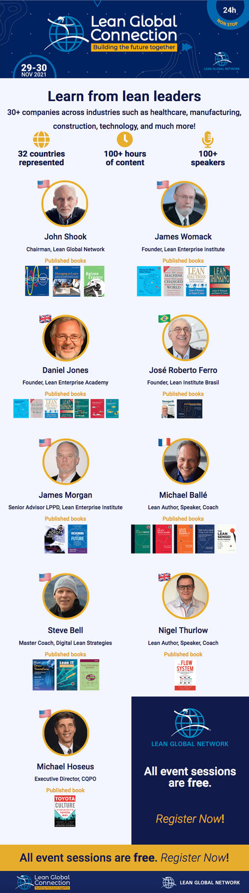

Landing page do filme The Art of Eduardo Tavares - Keep Going
Em 2024, o filme foi premiado como Melhor Documentário no festival "The Digital Gate International Film Festival", na Argélia. Em 2023, venceu o prêmio de Melhor Cinematografia no festival "Flowers Against Bullets", na Áustria.
Como diretor do filme — "The Art of Eduardo Tavares - Keep Going" —, tive a oportunidade única de vivenciar e observar a trajetória de Eduardo Tavares em seu ateliê na Austrália. Foi essa experiência que me permitiu criar uma página envolvente e repleta de depoimentos de grandes personalidades no mundo da arte e da body art tattoo.

- O filme participou dos festivais:
- - No Kwaite, foi selecionado para o festival “AIU Film Festival”.
- - “First-Time Filmmaker Sessions” pelo “Lift-Off Global Network”, na Inglaterra.
- - Foi exibido na Polônia no “TopShot International Film Festival”.
- - Na Itália, foi selecionado para 3 festivais: “Rudis Festival”, “Fox International Film Festival” e “Festival del Cinema di Cefalù”.
- - Nos Estados Unidos, foi semi-finalista e indicado ao prêmio de Melhor Documentário no festival “SWIFF”, em Nova Jersey.
- - Foi selecionado para o festival “ Saratov Sufferings Documentary Drama Film Festival”, na Russia.

A cada festival, o filme tem recebido uma atenção especial do público e dos críticos, consolidando-se como um trabalho que está chamando a atenção da comunidade cinematográfica internacional.
Ao projetar a página, busquei capturar a essência das palavras do artista, suas histórias de viagens e visão de mundo de forma criativa e coerente. E o resultado é uma experiência imersiva e inspiradora, que convida você a entrar no fascinante universo de Eduardo Tavares e descobrir o que move o seu talento singular.


")


 
